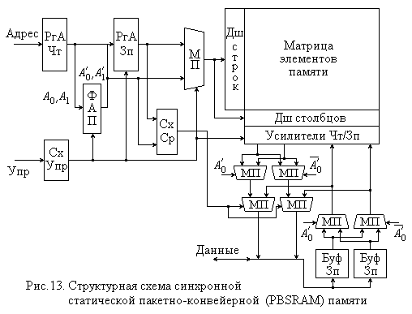

2.2. Статические ЗУ с произвольным доступом
В статических ЗУ (Static Random Access Memory – SRAM) в качестве элемента памяти используется триггер, что, конечно, сложнее, чем конденсатор с транзисторным ключем динамического ЗУ. Поэтому статические ЗУ обладают меньшей плотностью хранения информации: емкость типовых микросхем статических ЗУ начала 2000-х годов не превосходила 16 Мбит.
Однако триггер со времен первых компьютеров был и остается самым быстродействующим элементом памяти. Поэтому статическая память позволяет достичь наибольшего быстродействия, обеспечивая время доступа в единицы и даже десятые доли наносекунд, что и обусловливает ее использование в ЭВМ, главным образом, в высших ступенях памяти – кэш-памяти всех уровней.
Главными недостатками статической памяти являются ее относительно
высокие стоимость и энергопотребление.
Конечно, в зависимости от используемой технологии, память будет обладать различным сочетанием параметров быстродействия и потребляемой мощности. Например, статическая память, изготовленная по КМОП-технологии (CMOS память), имеет низкую скорость доступа, со временем порядка 100 нс, но зато отличается очень малым энергопотреблением. В ПЭВМ такую память применяют для хранения конфигурационной информации компьютера при выключенном напряжении сети (в этой же микросхеме размещают и часы, отсчитывающие реальное время). Питание такой памяти осуществляется от небольшой батарейки, которая может служить несколько лет.
Основными разновидностями статической памяти (SRAM) с точки зрения организации ее функционирования являются асинхронная (Asynchronous), синхронная пакетная (Synchronous Burst) и синхронная конвейерно-пакетная (Pipeline Burst) память.
Первой появилась асинхронная память, Интерфейс этой памяти включает
шины данных, адреса и управления. В состав сигналов последней входят:
CS# (Chip Select) – сигнал выбора микросхемы;
WE# (Write Enable) – сигнал разрешения записи;
OE# (Output Enable) – сигнал включения выходов
для выдачи данных.
Все сигналы управления инверсные, т.е. их активный (вызывающий соответствующее действие) уровень низкий. При единичном значении сигнала OE# выход микросхемы переходит в состояние высокого выходного сопротивления.
Временные диаграммы циклов чтения и записи приведены на рис. 11 и не требуют особых пояснений. Цикл записи может быть организован и несколько иначе, чем показано на рис. 11 б), в случае удержания во время цикла высокого уровня сигнала OE#.
Время доступа tAC у типовых микросхем составляет порядка 10 нс. Поэтому реально такие микросхемы могут работать на частотах, близких к частоте системной шины, только если эти частоты не превышают 66 МГц.
Несколько позже появилась синхронная пакетная статическая память (SBSRAM), ориентированная на выполнение пакетного обмена информацией, который характерен для кэш-памяти. Эта память включает в себя внутренний счетчик адреса, предназначенный для перебора адресов пакета, и использует сигналы синхронизации CLK, как и синхронная DRAM память (см. п. 2.3.2).
Для организации пакетного обмена, помимо имеющихся у асинхронной памяти управляющих сигналов CS#, OE# и WE#, в синхронную память также введены сигналы ADSP# (Address Status of Processor) и CADS# (Cache Address Strobe), сопровождающие передачу адреса нового пакета, а также сигнал ADV# (Advance) продвижения на следующий адрес пакета. Пакетный цикл всегда предусматривает передачу четырех элементов, так как внутренний счетчик имеет всего 2 бита, причем перебор адресов в пределах пакета может быть последовательным или с расслоением (чередованием) по банкам (при использовании процессоров семейства x86).
Временные диаграммы пакетных циклов чтения и записи приведены на рис. 12. Обращения к синхронной памяти могут быть и одиночными. В этом случае низкому уровню сигнала ADSP#, указывающему на передачу адреса, соответствует высокий уровень сигнала CADS#, а не низкий, как при пакетном цикле. Параметр TQK характеризует время задержки данных относительно синхронизирующего сигнала.
Следующим шагом в развитии статической памяти явилась конвейерно-пакетная память PBSRAM, обеспечивающая более высокое быстродействие, чем SBSRAM. В нее были введены дополнительные внутренние буферные регистры данных (здесь можно провести аналогию с EDO DRAM памятью) адреса, а в ряде модификаций предусмотрена возможность передачи данных на двойной скорости по переднему и заднему фронтам синхросигнала и используются сдвоенные внутренние тракты записи и чтения. Это позволило получить время обращения порядка 2-3 нс и обеспечить передачу данных пакета без задержек на частотах шины более 400 Мгц.
Внутренняя логика позволяет переключаться с циклов чтения на циклы записи и наоборот без дополнительных задержек, кроме того, анализируется совпадение адресов записи и чтения для исключения избыточных операций.
Структурная схема такой памяти приведена на рис. 13, где ФАП – блок формирования адресов пакета, МП – мультиплексоры, переключающие внутренние тракты чтения и записи в соответствии со значением младшего разряда адреса A0.

Временная диаграмма, приведенная на рис. 14, показывает запись и чтение как на одиночной (SDR – Single Data Rate), так и на двойной скорости (DDR – Double Data Rate) передачи. Сигналы CQ и CQ# – дифференциальные выходные сигналы синхронизации, близкие по времени к моменту появления данных на шине при чтении и используемые для синхронизации принимающих устройств. Сигналы SA и B – адресные и управляющие сигналы соответственно, причем последние используются для задания типа цикла. В режиме чтения с двойной скоростью передачи формируются два набора данных, начиная со второго переднего и заднего фронтов синхросигнала, если по его первому переднему фронту передается начальный адрес пакета. Первый набор данных (DOUT-A) формируется для заданного адреса, а второй (DOUT-A') – для следующего адреса пакета, в соответствии с определенным для пакета порядком.
Аналогичным образом запись с двойной скоростью передачи требует установки данных для записи, начиная со второго переднего и заднего фронтов сигнала синхронизации.
В режиме чтения с одиночной скоростью формируется только один набор данных по переднему фронту синхросигнала, начиная со второго сигнала, а при записи с такой же скоростью данные должны выставляться на шину, начиная с переднего фронта второго синхросигнала после передачи адреса.
Переключение из режима двойной скорости в режим одиночной (и
наоборот) производится при подаче соответствующего управляющего сигнала.